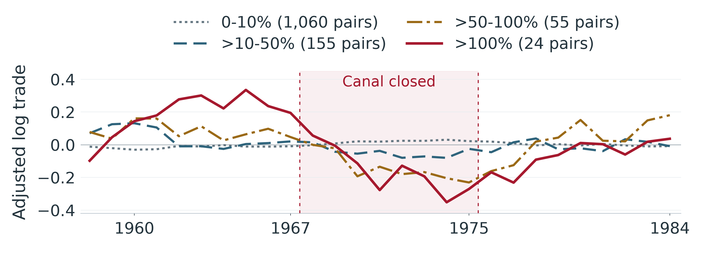

ECON 342 · Week 11 · Study version
Trade raises
the cost of war
Review the bargaining mechanism, the evidence, and the conditions that can weaken it.
A focused study guide
One model, two empirical questions
Interactive bargaining range
Canadian application
The mental model in words
Trade creates gains from specialization, scale, variety, and market access. If fighting interrupts those gains, each side has more to preserve by settling its dispute.
| Link | What would establish it? |
|---|---|
| Cost channel | Disruption changes routes, trade, prices, and ultimately welfare. |
| Deterrence channel | A change in trade opportunities changes incentives and decisions to fight. |
Expected net welfare lost in war is the relevant cost. Account for replacement buyers and suppliers; gross exports measure sales.
Model foundations: Fearon (1995) and Martin, Mayer, and Thoenig (2008).
Read and change the bargaining range
A and B divide 100. A receives x and B receives 100 − x. Each has a 50% winning chance and pays a direct fighting cost of 10. Without trade losses, each war payoff is 40.
[30, 70]
Peaceful settlement range for A’s share, x
Each country’s war payoff: 30. Settlement-range width: 40.
Illustrative assumptions: prize 100; equal winning chances; direct fighting cost 10 each. L measures expected net welfare lost from trade interruption. The slider shows acceptable divisions; it does not assign a probability of war.
How a trade loss can change the chosen offer
A makes one take-it-or-leave-it offer. B privately knows its fighting cost: 10 with probability 40%, or 30 with probability 60%. A’s fighting cost is 10. B accepts when indifferent.
| Expected trade loss each | Safe demand by A | Risky demand by A |
|---|---|---|
| 0 | Demand 60. Both types accept. Payoff 60. | Demand 80. High-cost B accepts. 0.6(80) + 0.4(40) = 64. |
| 10 | Demand 70. Both types accept. Payoff 70. | Demand 90. High-cost B accepts. 0.6(90) + 0.4(30) = 66. |
Trade losses make A choose the safe demand in this example: 70 exceeds 66. Initially the risky demand gives 64 rather than 60.
Invented teaching parameters. Expected payoff is a probability-weighted average. Known payoffs and enforceable bargaining already allow peace; private information creates the incentive to risk rejection.
Evidence for the cost channel: disrupted trade


Closure lengthened routes unevenly. Comparing differently exposed trading pairs gives evidence on the disruption channel. Other shocks must not track exposure.
Feyrer (2021): reconstructed Figure 1; 1,294 pairs, 1958–1984. Adjusted log trade removes pair and year means; pre-existing differences remain visible. Glick–Taylor (February 2005) also estimate large, persistent trade losses. Measuring welfare costs requires further information.
Evidence for deterrence: Atlantic trade
| Design | Interpretation |
|---|---|
| Trade measure | Wheat-price transmission between Europe and the New World proxies for market integration. |
| Outside variation | Winds and cyclone activity shift Atlantic sailing and trade opportunities. |
| Outcome and finding | Greater integration is estimated to reduce intra-European conflict onset. |
| Main concern | Storms could affect fleets and military capacity directly, violating the trade-only interpretation. |
The result supports deterrence under the design’s assumptions. European conflict is the measured outcome; colonial conflict lies outside it.
Ahsan, Panza, and Song (2025). Final abstract reports a 0.157-standard-deviation decline in conflict onset for a one-standard-deviation increase in trade. This is not 15.7 percentage points; no uncertainty interval is asserted here. Detailed design checked in March 2020 version.
Bilateral dependence and outside options
Value of this relationship
More valuable bilateral trade can raise what the two sides lose if fighting disrupts their relationship.
Ability to replace it
Access to alternative suppliers and customers can cushion that loss and weaken this deterrent. The result depends on third-country trade remaining available.
Martin, Mayer, and Thoenig’s 1950–2000 estimates fit opposite effects of bilateral ties and broader openness on measured disputes: displays of force, use of force, and war.
Ask: trade with whom, disrupted in what way, with which substitutes?
Martin, Mayer, and Thoenig (2008). Theory pp. 869–875; empirical Tables 6–7. The instruments—trade preferences and remoteness—need exclusion assumptions. These estimates do not establish that all diversification raises conflict.
Why an economically costly war can still happen
- Small expected trade loss: wartime trade continues or replacements are cheap.
- Private information: a tough offer can be worth the risk of rejection.
- Commitment: today’s promise may be revised when power changes.
- Different objectives: decision-makers may give economic losses less weight than other goals.
Zheng’s contribution: an agreement can work under particular expectations about rejection yet fail under other conflict expectations allowed by the model. Secure peace is the stronger requirement.
Fearon (1995); Martin, Mayer, and Thoenig (2008); Zheng (2019). Zheng studies mediation and conflict; the trade connection is our classroom interpretation.
Apply the framework to Canada
- Identify the gains. Auto supply chains combine specialization, market scale, and cross-border inputs.
- Measure the alternatives. Replacement costs depend on buyer access, supplier qualification, and transport connections.
- Evaluate institutions. Credible access and dispute settlement help preserve those gains.
Diversification improves resilience while changing dependence on a particular partner. Assess the benefits and costs for a specified industry and disruption.
Application of prior course evidence. Tariffs and commercial disputes differ from armed conflict. The bargaining framework does not provide a Canada–US war forecast.
Check your understanding
Keep the prize of 100, equal winning chances, and direct fighting costs of 10 each.
- If expected trade losses fall from 10 to 2 each, what happens to the range of acceptable divisions?
- Why does evidence that war reduces trade leave the deterrence claim unsettled?
- How can a larger settlement range coexist with fighting?
Reveal the answer
1. [30,70] becomes [38,62]. Its width falls from 40 to 24 because the war payoff rises from 30 to 38. These widths are payoff units, not probabilities.
2. Disruption establishes a trade effect. Deterrence concerns whether anticipated losses change fighting decisions; peace itself can also promote trade.
3. Private information, weak commitments, or different objectives can prevent a mutually acceptable agreement.
Sources and further study
- Fearon (1995): why costly war can occur.
- Martin, Mayer, and Thoenig (2008): trade and escalation.
- Glick–Taylor (February 2005 conference version): war and trade. Feyrer (2021): Suez.
- Ahsan, Panza, and Song (2025): Atlantic trade and European conflict.
- Zheng (2019): implementation and secure peace.
- Thoenig (January 2024): trade and bargaining toolkit.
Full lecture · PDF · Source notes and data
Optional: Panama market-access experiment. It models trade and purchasing power; predicting conflict requires an additional bargaining model.